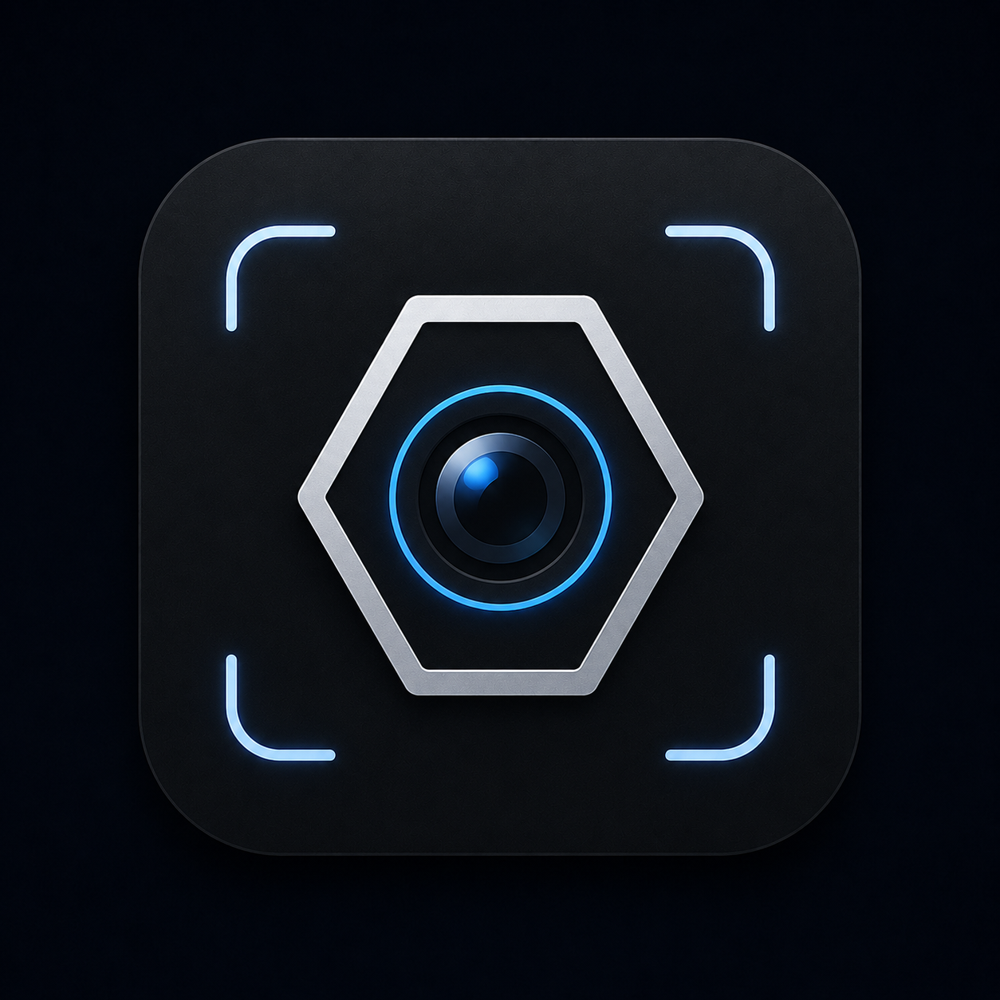

Deep Spec · app mark
DEEP SPEC
A metallic hex-bolt frame around a glossy camera lens, set inside a cyan focus-bracket reticle. The reticle motif extends into the UI as the yellow scanner reticle.
deepspec-app-icon.png
icon-512.png
icon-192.png